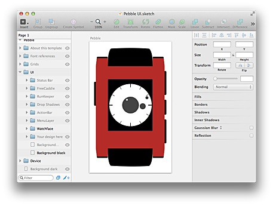

The Pebble UI template
The Pebble UI template is a clone of the Photoshop Pebble UI template by Matthew Congrove for the Pebble.
Layer examples
 The template offers the same layers and information as the Photoshop version plus a watchface.
The template contains grids from Orviwan to help with the layout.
The Pebble device is created with vector drawings, skins with the five Pebble colors are offered.
Several example display layouts plus the "Status bar" and the "Action bar" help to get started.
Beside the classic Pebble the Pebble Steal is offered - also as vector drawings.
The template includes font information about the Pebble UI fonts and font alternatives for the layout.
How to install the "Pebble UI.sketch" file as a template
Download the PebbleUI-Sketch repository from GitHub and open the "Pebble UI.sketch" file in Sketch 3. Then use the menu "File > Save as Template..." to save the "Pebble UI" as a template.